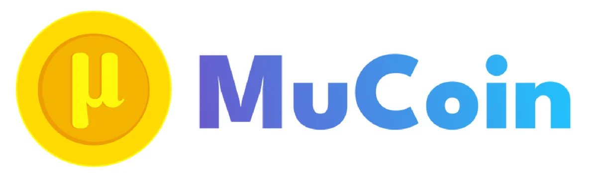

The name

Mu (μ) is a Greek letter. It is often used to mean “micro”, something very small.
In statistics, mu also stands for the mean, or average. Budgeting is about small details and averages.
Small, steady steps add up. Small savings can grow into something large over time.
MuCoin is about personal budgeting. It has nothing to do with cryptocurrency.